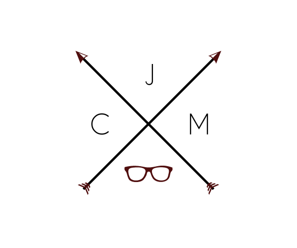

BASIC INFORMATION
Name: Jyra Coleen E. Mojica
Nickname: Jyra, Jura, Jyjy, Jai
Address: Somewhere in Batangas
School: University of the Philippines Los Baños
Course: BS Computer Science
CMSC 100 EXER 01
About me
3rd year BS Computer Science student. Just a little nerd
The Real Reason for Taking ComSci
Failing to get into UP Diliman with a Psychology degree, I decided to take my second choice course instead. I really didn't expect that I will take an entirely different career path.
Favorites
ComSci subject:
CMSC 2. HTML and CSS were my head starter in webpage development in highschool and it is where I excelled in the most during that time, so it was really fun for me to take that class especially that designing the interface is a major interest.
Programming Language:
C. The programming language that I have used the longest time, so I have the most familiarity on C among all the programming languages I have used. It is the most comprehensive language I have used so far, followed by Java. Plus, I've grown more interest in C because of my great professor, Mr. Jason Obrero.
Food:
Too many to mention
Color:
Navy Blue
Hobbies